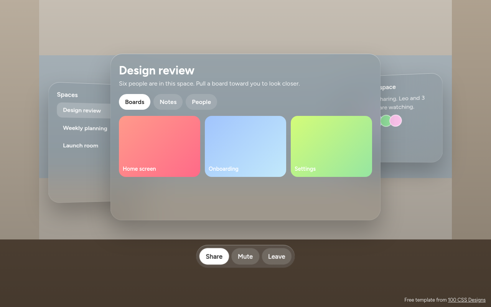
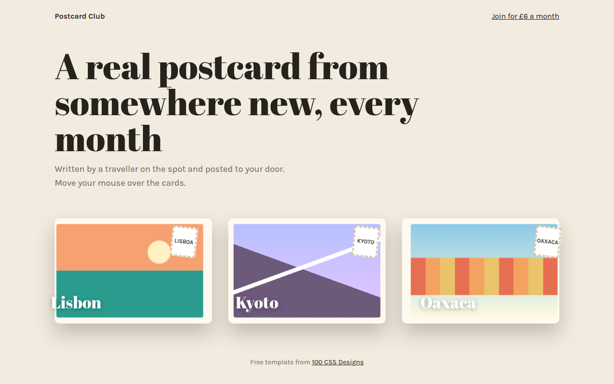
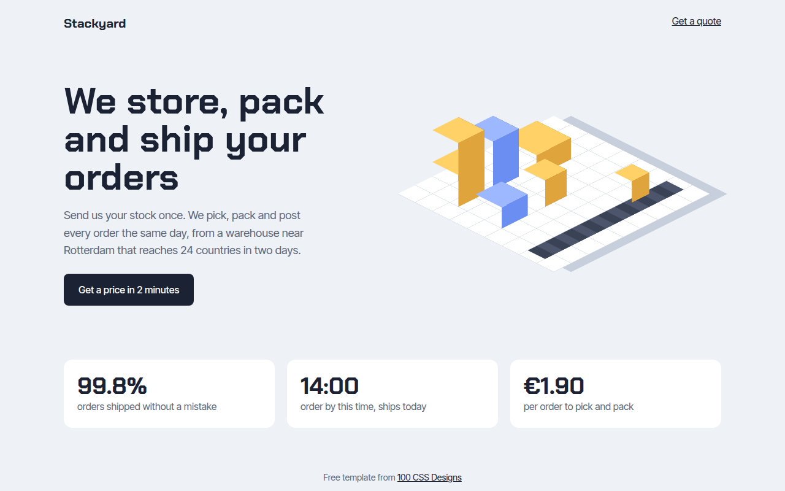
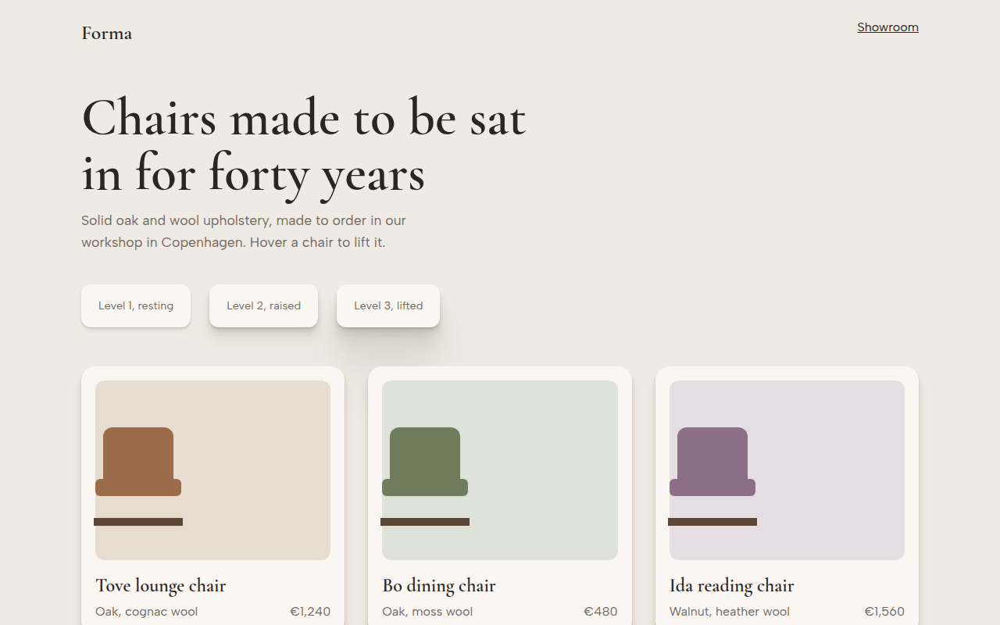
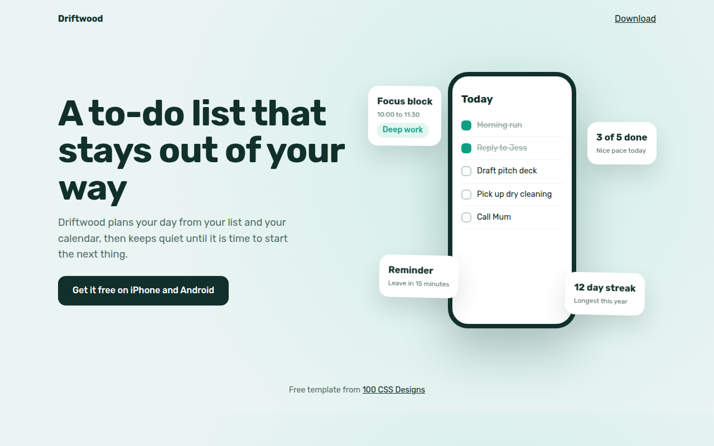
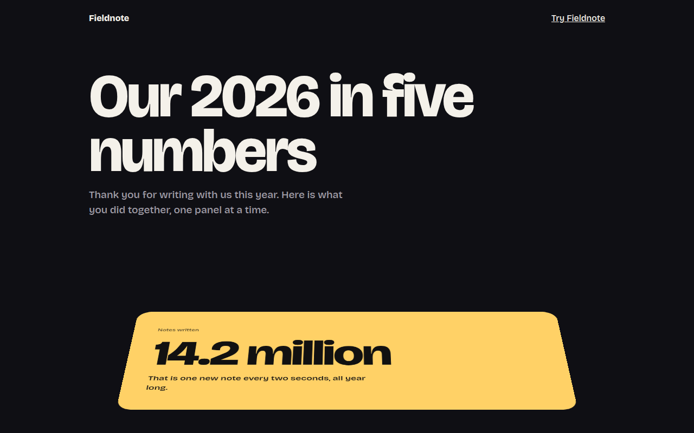
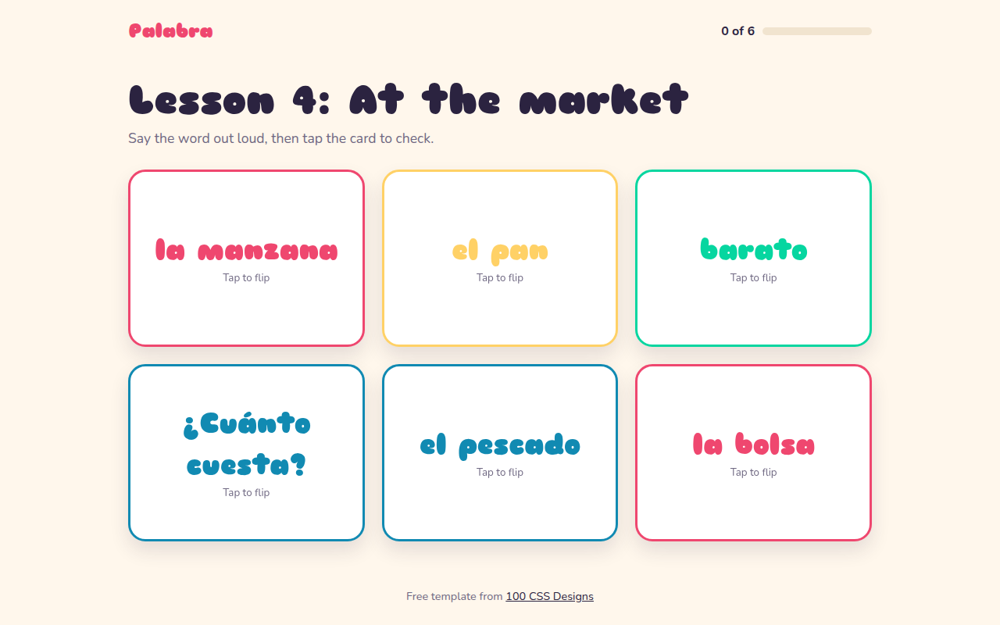
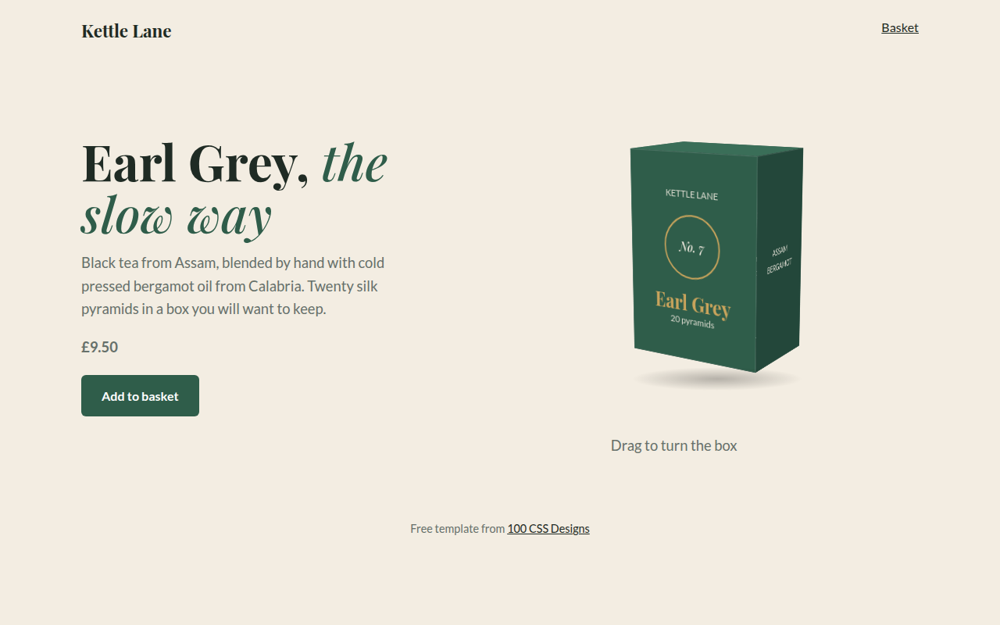
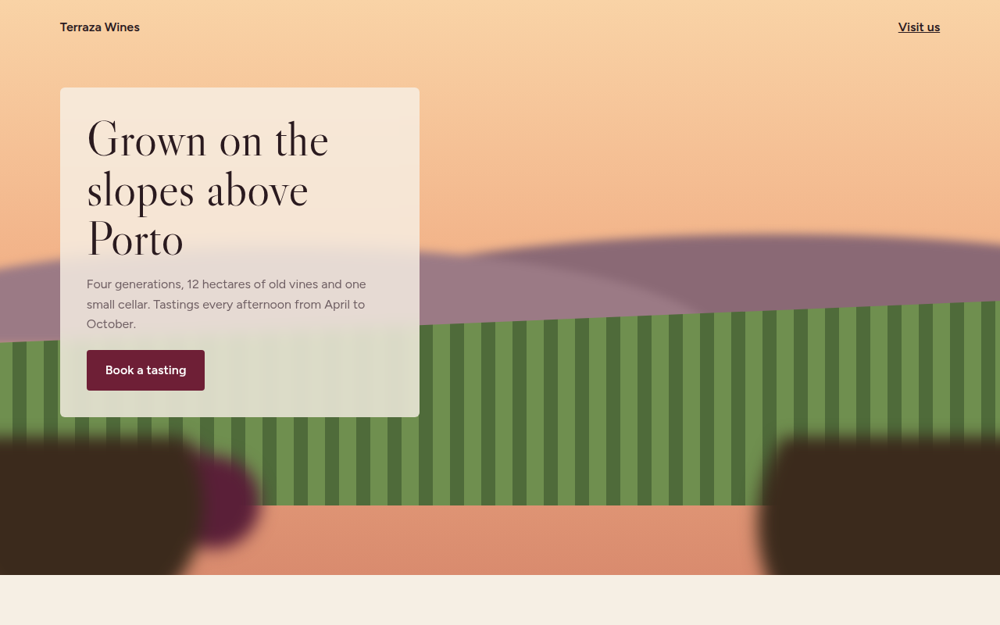
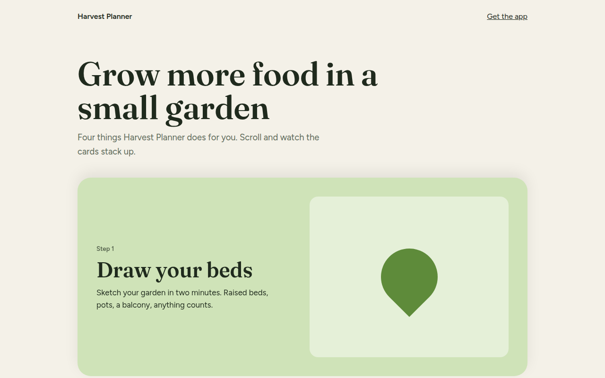

Home / 3D and Depth / Spatial UI
Spatial UI CSS Template, Free with Live Demo
Free spatial UI template inspired by Apple visionOS. Floating glass windows at different depths over a room, with a floating tab bar. Live demo. The example is Habitat, a spatial meeting workspace.

What is spatial ui?
Spatial UI is the design language of headsets like Apple Vision Pro. Windows are frosted glass floating in your room, side panels angle toward you, and tools sit in a small pill bar below the main window.
On the web you can get the same feel with CSS 3D. The side windows are pushed back and turned slightly with translateZ and rotateY, all glass is backdrop-filter blur, and the room behind is just gradients.
Good for
- Apps and demos for spatial computing
- Futuristic product launches
- Meeting and collaboration tools
- Concept and portfolio pieces
What you get in this template
- Three glass windows at different depths
- Side panels angled toward the viewer
- Floating ornament tool bar
- Room background drawn with gradients
- Flattens into a simple stack on phones
The key CSS
This is the part that makes the spatial ui look work. Copy it into your own project.
.room { perspective: 1400px; }
.space { transform-style: preserve-3d; }
.win {
border-radius: 30px;
background: rgba(128, 128, 128, .28);
backdrop-filter: blur(40px) saturate(160%);
box-shadow: inset 0 1px 0 rgba(255,255,255,.4), 0 30px 60px rgba(0,0,0,.25);
}
.side { transform: translateZ(-120px) rotateY(18deg); }
.right { transform: translateZ(-120px) rotateY(-18deg); }How to use it
- Click Download HTML file above.
- Open the file in any code editor, like VS Code.
- Change the text, colors and links to match your project. Colors are at the top of the style tag.
- Upload it to any host, such as GitHub Pages, Netlify or your own server. It is one file with no build step.
Questions people ask
What is spatial UI?
It is interface design for 3D spaces, like mixed reality headsets, where windows float around you with depth, glass materials and soft light.
How do I make windows look like visionOS glass?
Use a semi transparent grey background with strong backdrop-filter blur and saturation, a thin light inner border and a large soft shadow.
Does this template work in a headset browser?
Yes, it is a normal web page. On a flat screen it uses CSS 3D to fake the depth.
More 3D and Depth designs

071. 3D Tilt Cards
Postcard Club, a postcard subscription
072. Isometric
Stackyard, a fulfillment warehouse
073. Layered Shadows
Forma, a furniture maker
074. Floating Elements
Driftwood, a to-do app
075. Perspective Scroll
Fieldnote, a year in review page
076. Flip Cards
Palabra, a Spanish flashcard app
077. 3D Product Box
Kettle Lane, a tea brand
079. Depth Blur
Terraza, a family winery